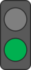

- Overall Aim – The aim of the escape room is to navigate through all the rooms, completing puzzles along the way to unlock further rooms/puzzles in the shortest time possible.
- Navigation – Navigate between rooms using the red up/down/left/right buttons which can be found at the edge of the game window. When viewing information/a puzzle, navigate back to the room using the back button in the upper left corner.
- Information Points – Information to help you complete the puzzles can be found by clicking on the information points, as indicated by a book icon.
- Puzzle Points – Puzzles that must be completed to progress can be accessed by clicking on the puzzle piece icons located in rooms across the escape room.
- Traffic Light System – Incomplete puzzles are indicated by a red traffic light, whilst already completed puzzles are indicated by a green traffic light.
- Locks – Locked rooms/puzzle pieces are indicated by a lock icon. These must be unlocked by completing a puzzle elsewhere in the escape room
- End Screen – When the final room is reached, complete the escape room by clicking on the trophy.